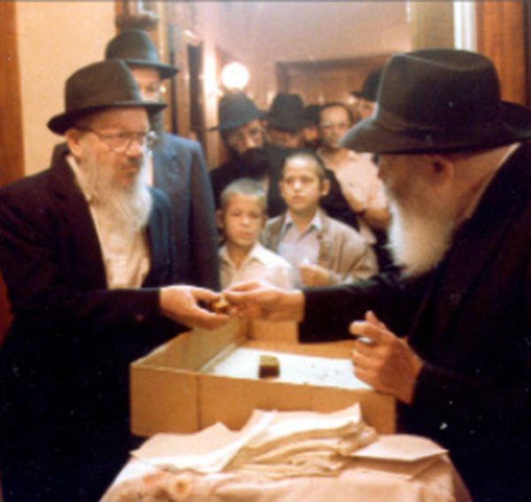
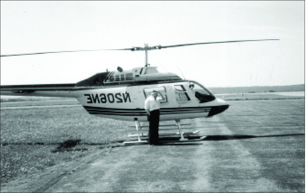

We Need to Feel the Urgency!
We can’t sit around for even one second! We must work to attain the goal: hastening the hisgalus of the Rebbe Melech HaMoshiach. * Written twelve years ago by Rabbi Yitzchok Gansbourg a”h who devised many projects to hasten the Geula.

In recent weeks I’ve been thinking about the sicha of Chaf-Ches Nissan 5751, in which the Rebbe assigned us the difficult task of bringing Moshiach. I’ve looked at that unforgettable sicha and tried to understand what we are still missing. What have we yet to do?
The world hasn’t remained the same as it was when the sicha was said. If, until the sicha, the topic of the Geula was exclusively Lubavitch, today all religious groups talk about Moshiach. Many books have been written about the Geula in recent years and dozens of well-known lecturers have spoken on the subject. More and more people are talking about Moshiach.
Within Lubavitch, so much has been done. As always, the bachurim are in the forefront. They learn Inyanei Moshiach and Geula and they spread the Besuras Ha’Geula. Anash are also involved, with many devoting time to teach and spread the word. We can’t say that we aren’t involved in Inyanei Moshiach and Geula. However …
It is hard to say this, but when it comes to the main point of the sicha, we have hardly made any progress at all. What was the Rebbe saying in that sicha? The Rebbe didn’t say that we don’t want Moshiach. Nor did the Rebbe say that we aren’t crying out to Hashem to bring him. The Rebbe certainly didn’t say that we don’t believe in the coming of Moshiach.
The Rebbe focused on one issue: Why aren’t we doing it all sincerely?
We cry out because we were told to, thundered the Rebbe. He made it clear that if we cried out sincerely, Moshiach would have come long ago.
In order to cry out sincerely, the issue must mean the world to us. If we truly felt the urgent need for the coming of Moshiach, we wouldn’t rest for a moment. We would constantly be crying out “Ad Masai,” whether literally or by our nonstop actions to bring Moshiach.
When belief in the coming of Moshiach permeates our very being, our daily behavior is altogether different. It becomes the behavior of someone who knows that in the very next moment he will be in the era of Geula, facing the Rebbe who will look at him and ask: What did you do to hasten the Geula?
As long as we don’t internalize the belief, as long as the emuna is in a state of makif (a superficial state), well, we saw what happened with the makif-like faith of the Generation of the Desert. The Midrash says that only one fifth of the Jewish people in Egypt believed Moshe’s message and only they left. That means that the Generation of the Desert was one of believers. However, their faith was only makif, as just one week after the miraculous exodus from Egypt they stood facing the Yam Suf and yelled at Moshe, “Are there no graves in Egypt that you brought us to die in the desert?” Yes, those were the same big believers who left Egypt in the merit of their faith.
Let’s go on. The sea split and the Jewish people passed through with their emuna growing. Now, they not only believed in Hashem but also in Moshe His servant. The Torah itself says so. Apparently though, this emuna did not go deep enough because only three days later, when they arrived in Mara and couldn’t drink the bitter water, they complained to Moshe. Hashem did a miracle, but two and a half weeks later they complained again, “If only we died by G-d’s hand in the land of Egypt.”
The Jewish people continued to experience enormous miracles and finally arrived at the foot of Mt. Sinai. They saw G-dly visions and received the Torah. They rose up to lofty spiritual heights but it was only makif, and this is the reason that forty days later they made a golden calf.
According to the Zohar, which the Rebbe quotes, our generation is a reincarnation of the Generation of the Desert and we need to rectify what they messed up. As long as we don’t internalize pure faith in what the Rebbe said, that “Hinei Hinei Moshiach Ba,” then we can shout that we want to see our king, but it is not completely sincere. When we internalize the belief and cry out sincerely, then as the Rebbe said, Moshiach would be here already.

***
I remember that following that sicha of 28 Nissan, many people wondered: If the Rebbe says that what he did up until now was “l’hevel v’l’rik” (for naught), how can we accomplish this task?
I was reminded of a parable that the mashpia R’ Avrohom Maiyor said to an older bachur who did not try hard enough to find a shidduch. “You are like a chick inside the egg. The hen sits on the eggs for 21 days and then the chicks make their way out. Chicks do not emerge from all the eggs; there are eggs that remain eggs. When the laying period is over, the hen says to the eggs: I did everything for you, but emerging from the egg, the final push, that is something you need to do yourself. Nobody can do it for you.”
The Rebbe did everything. He prepared the world to welcome Moshiach. Everything is ready and the Rebbe says that the Shor HaBar and the Leviasan are on the table next to the Yayin HaMeshumar. We have reached the stage where we need to open our eyes and see all this. This final push is something that only we can do.
What do we actually need to do? The Rebbe says in the sicha that we need to do things that are “Lights of Tohu” in a way of “Vessels of Tikkun.” The entire subject of Geula is beyond human intellect, which is why it is called “Lights of Tohu.” Go try to tell someone the simplest meaning of Geula that a man will come and build the third Beis HaMikdash on the Temple Mount, and he will immediately tell you that under present conditions that is harder than climbing to the moon.
But beyond faith, our behavior also needs to be in a way of “Lights of Tohu in Vessels of Tikkun.” We should have a fire burning within us constantly, something unnatural in a way of “Lights of Tohu,” and at the same time, we need to do things in a normal way, with “Vessels of Tikkun.”
So that you get the idea of what this fire within us needs to be like, I’ll compare it to a man whose father had a heart attack. He rushes him to the hospital where they say that his father needs a heart transplant and he needs to get a heart from somewhere. Will the son sit with hands folded? Will he be involved in local neighborhood politics? Obviously, he will drop everything and devote himself exclusively towards obtaining a heart for his sick father.
In our case, it is much more than a heart. Our entire being is in a state of sickness and the refua will come with the hisgalus of the Rebbe Melech HaMoshiach. This refua can only be accomplished by us. This is why we are expected not to rest for a moment until we see the Rebbe again.
***
At the end of the sicha, the Rebbe says that we need two-three people to come up with a plan of what to do and how to do it. Over the years, I’ve had the opportunity to come up with and implement original ideas that the Rebbe encouraged. I have some ideas regarding Moshiach and I’d like to tell them to the three people who are meeting to come up with a plan – and every Chassid must consider himself as one of the trio who will bring the Geula.
The problem, as I pointed out before, is that we haven’t internalized it. For example, when Tzeirei Chabad in Eretz Yisroel ran a huge publicity campaign, “Hichonu L’Bi’as HaMoshiach,” they said that the publicity was step one of two. Step two, they said, was internalizing the message. This second stage is much harder than the first stage and can only be achieved through learning.
If we look closely, we see that the Rebbe spoke about these two phases. Some of the sichos were about publicizing the Besuras Ha’Geula and the fact that there is a prophet etc. and some of the sichos were about the need to prepare people for Moshiach. For some reason, probably because it is easier, we’ve put more effort into the publicity. After all, publicity doesn’t require that much effort. You need a donor who will pay for the campaign and then a marketing company, and the campaign gets underway.
Yet despite the difficulties, we must carry out the Rebbe’s instruction to prepare the world to welcome Moshiach. To accomplish this, each of us must speak one-on-one with others and explain how much better the world will be when Moshiach comes. The Rebbe promises that when we speak from the heart, our listeners will accept what we have to say.
Beis Moshiach (staff). "We Need to Feel the Urgency!." Beis Moshiach, no. 874 (March 21, 2013).